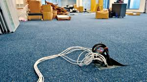

Representing Graphs and Graph Isomorphism

Now, in week 15, we begin with an entirely new topic: graphs. Essentially, it's a two-in-one topic for this week. The concept of graphs is foreign yet surprisingly easy to grasp, as it is not overly complex. We are diving into understanding vertices and edges, learning how to represent graphs, and exploring different types of graphs such as directed and undirected graphs, as well as weighted and unweighted graphs. This new material, while initially unfamiliar, seems straightforward and provides a refreshing change from the intricate probability concepts we tackled earlier.
We started with the basics, such as defining what graphs are and understanding the importance of vertices (or nodes) and edges (the connections between nodes). We also explored different ways to represent graphs, like adjacency matrices and adjacency lists, each having its own advantages depending on the application. Furthermore, we examined various types of graphs, such as complete graphs, bipartite graphs, and trees, which have unique properties and uses in different contexts.
The transition into graphs has been relatively smooth, providing a much-needed break from the rigorous challenges of Bayes' theorem. The visual and intuitive nature of graphs makes the topic more engaging and easier to comprehend.
The practical applications of graphs further underscore their importance in discrete mathematics. Graph theory is pivotal in various fields, including network design, where it helps in optimizing routes and connections; social network analysis, which uses graphs to understand relationships and influence within networks; and in solving complex optimization problems like the traveling salesman problem. These applications demonstrate how the abstract concepts of graph theory translate into tangible solutions for real-world challenges. For example, we can follow this problem.
Consider a company that wants to ensure redundancy in their network design by comparing two different layouts. In one design, they have offices A, B, C, and D connected by cables. In another design, they have offices W, X, Y, and Z connected differently but aiming for the same connectivity. By representing these networks as graphs and checking for isomorphism, the company can confirm that both designs provide the same level of connectivity. This way, they can choose either design based on other factors like cost or ease of installation, knowing that the redundancy and connectivity properties are identical. This demonstrates the practical application of graph isomorphism in network design.